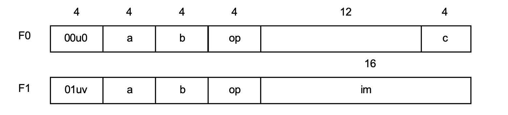
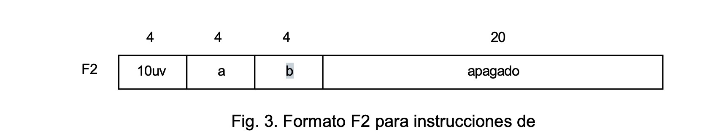
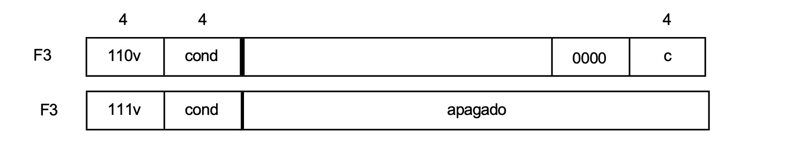

Instrucciones de Registro RISC0
RISC0
Los procesadores constan de dos partes la unidad arimética lógica ALU y la unidad de control. La primera realiza operaciones aritméticas lógicas, mientras que la segunda controla el flujo de operaciones. Además del procesador, existe la memoria. Nuestro RISC consta de una memoria cuyos elementos direccionables individualmente son de bytes(8 bits).
La ALU cuenta con un banco de 16 registros de 32 bits. Las cantidades de 32 bits se denominan palabras. Las operaciones aritméticas y lógicas, representadas por instrucciones, siempre operan sobre estos registros. Los datos se pueden transferir entre la memoria y los registros mediante instrucciones separadas de carga y almacenamiento.
Características importantes de las arquitecturas RISC:
- La memoria esta en gran memdida desacoplada del procesador.
- Cada instrucción tarda un ciclo de relój en ejecutarse, quizas con la excepción del acceso a una memoria más lenta.
1. Banco de registros
En la imagen se observa como el bloque amarillo. En los procesadores RISC, casi todas las operaciones se realizan sobre sobre registros.
Entrada(a): Es el canal por donde se escribre el resultado de una operación de vuelta al banco de registros.
Salidas(b y c): Son los operandos que el procesador lee para realizar la operación. Por ejemplo si quieres suma R1 + R2, el valor de R1 saldría por el cable b y el del R2 del cable C.
2. El Multiplexor
Antes de entrar a la ALU, vemos un selector que tiene dos entradas:
- c: El valor que viene directamente del banco de registros.
- constante IR: Un valor inmediato (un número fijo) que viene directamente de la instrucción (Instruction Register).
Permite que la ALU elija entre operar con dos registros o con un registro y un número constante.
3.ALU
Es el bloque que realiza el trabajo pesado. Recibe dos datos:
- Uno viene siempre del registro a través de la linea b.
- El otro viene del multiplexor (ya sea un registro o una constante).
La ALU ejecuta la operación que indique la instrucción actual.
## 3.Ciclo de retroalimentación
Notarás que la línea que sale de la parte inferior de la ALU sube de nuevo a la entrada a. Esto significa que una vez que la ALU calcula el resultado, este se envía de vuelta para guardarse en un registro destino. Asi, el resultado queda disponible para la siguiente instrucción.
# El conjunto de instrucciónes.
El términio reducido sugiere que mantener el conjunto de instrucciones pequeño es buena idea. Un conjunto de instrucciones debe permitir componer cualquier operación más compleja a partir de instrucciones básicas. El segundo objetivo debe ser la regularidad, reglas directas sin excepciones.
El prinicipal enemigo de la regularidad y la simplicidad es la búsqueda de la velocidad y la eficiencia. Damos prioridad un diseño sencillo y regular.
La arquitectura RISC divide las instrucciones en tres clases:
- Instrucciones aritméticas y Lógicas que operan sobre registros.
- Operaciones para transferir datos entre registros y memoria.
- Instrucciones de control (ramificación).
Resgistro de instrucciones
Seguimos con la convención establecida de proporcionar instrucciones con 3 número de registro, dos que especifican los operandos (fuentes) y uno el resultado (destino). De este modo obtenemos un ordenador de 3 direcciones. Esto proporciona a los compiladores el mayor grado de libertad para asignar registros con el fin de obtener una eficiencia óptima. Las operaciones lógicas son las convencionales AND, OR y XOR. Las operaciones aritméticas son las cuatro operaciones básicas de suma, resta, multiplicación y división.
Además incluimos un conjunto de instrucciones de desplazamiento, que mueven los bits horizontalmente. También proporcionamos desplazamiento a la izquierda LSL y desplazamiento a la derecha ASR. El primero introduce ceros en el extremo inferior, mientras que segundo replica el bit superior en el extremo superior. El recuento de desplazamiento puede ser cualquier número entre 0 y 31.
Las 16 instrucciones de registro utilizan las mismas dos formas. En la forma F0, ambos operandos son registristros. En el formator F1, un operando es un registro y el otro es una constante contenida en la propia instrucción.
El conjunto completo de instrucciones de registro se muestra en la siguiente tabla en un formato similar al ensamblador.
R.a es un registro de destino y R.b es el primer operando. El segundo operando es el registro R.c o el literal inmediato im. En este caso el bit modificador v determina como se amplia la constante de 16 bit im a un valor de 32 bits.
Tabla 1: Instrucciones de Registro
A continuación se detallan las 16 instrucciones de registro, su sintaxis y operación. En estas instrucciones, \(R.a\) es el registro de destino, \(R.b\) es el primer operando, y \(n\) representa ya sea el registro \(R.c\) (formato F0) o el literal inmediato \(im\) (formato F1).
| Op | Mnemónico | Sintaxis | Operación | Categoría / Descripción |
|---|---|---|---|---|
| 0 | MOV | a, n | \(R.a := n\) | Mover valor |
| 1 | LSL | a, b, n | \(R.a := R.b \leftarrow n\) | Desplazamiento a la izquierda (\(n\) bits) |
| 2 | ASR | a, b, n | \(R.a := R.b \rightarrow n\) | Desplazamiento a la derecha (extensión de signo) |
| 3 | ROR | a, b, n | \(R.a := R.b \text{ rot } n\) | Rotar a la derecha (\(n\) bits) |
| 4 | AND | a, b, n | \(R.a := R.b \ \& \ n\) | Operación lógica AND |
| 5 | ANN | a, b, n | \(R.a := R.b \ \& \ \sim n\) | Operación lógica AND NOT |
| 6 | IOR | a, b, n | \(R.a := R.b \text{ o } n\) | Operación lógica OR inclusivo |
| 7 | XOR | a, b, n | \(R.a := R.b \text{ xor } n\) | Operación lógica OR exclusivo |
| 8 | ADD | a, b, n | \(R.a := R.b + n\) | Aritmética entera: Suma |
| 9 | SUB | a, b, n | \(R.a := R.b - n\) | Aritmética entera: Resta |
| 10 | MUL | a, b, n | \(R.a := R.a \times n\) | Aritmética entera: Multiplicación |
| 11 | DIV | a, b, n | \(R.a := R.b \text{ div } n\) | Aritmética entera: División |
| 12 | FAD | a, b, c | \(R.a := R.b + R.c\) | Coma flotante: Suma |
| 13 | FSB | a, b, c | \(R.a := R.b - R.c\) | Coma flotante: Resta |
| 14 | FML | a, b, c | \(R.a := R.a \times R.c\) | Coma flotante: Multiplicación |
| 15 | FDV | a, b, c | \(R.a := R.b / R.c\) | Coma flotante: División |
Notas sobre los operandos:
- F0 (Registro-Registro): El operando \(n\) corresponde a los bits del registro \(R.c\).
- F1 (Registro-Inmediato): El operando \(n\) corresponde al valor constante \(im\) (16 bits) extendido según el bit modificador \(v\).

Instruciones de memoria
Solo hay dos instrucciones de memoria, cargar y almacenar. Especificar un registro de destino R.a para la carga, o un registro de origen para el almacenamiento. La dirección de memoria es la suma del registro R.b y un desplazamiento de 20 bits.
- LD a, b, off R.a := Mem[R.b + off]
- ST a, b, off Mem[R.b + off] := R.a
u(Dirección del dato):
\(u = 0\) Operación con carga (Memoria \(\to\) Registro).
\(u = 1\) Operación con almacenamiento (Registro \(\to\) Memoria).
v(Tamaño del dato):
\(v = 0\) Se transifere una palabra completa (32 bits).
\(v = 1\) Se transfiere solo un byte (8 bits). (RISC3)
Para calcular la dirección de memoria, el procesador no busca una dirección fija, sino que la calcula dinámicamente. Esto se llama direccionamiento indexado.

Instruciones de bifurcación
Las instrucciones de ramificación se utilizan para romper la secuencia de instrucciones. La siguiente instrucción se designa mediante un desplazamiento con signo de 24 bits o mediante el valor de un registro, dependiendo del bit modificador u. Indica la longitud del salto hacia adelante o hacia atras(direccionamiento relativo al PC). Este desplazamiento se expresa en palabras, no en bytes, ya que las instrucciones siempre tienen una longitud de una palabra.
El modificador v determina si el valor del PC se almacena en el R15(registro de enlace). Esta función se utiliza para llamadas a procedimientos. El valor almacenado es entonces la dirección de retorno.
U
\(u = 0\) Salto por registro, se usa cuando ya tienes la dirección de destino guardada en un registro (normalmente porque vas a regresar de una función) \(PC := RC\).
\(u = 1\) Salto relativo es el que se usa para los if y los bucles (for, while), no le das una dirección exacta sino una distancia \(PC := PC + 1 + offset\) (Como el offset tienen 24 bits y es con signo puedes saltar hasta 8 millones de instrucciones hacia arriba o hacia abajo).
V:
\(v = 1\) El registro de enlace, antes de saltar a otro lado guarda en el registro R15 la dirección de la instrucción que sigue a esta \(R15 := PC + 1\) (Para que cunado termine la función solo tenga que hacer una salto a R15 para regresar a la instrucción).
\(v = 1\) Se transfiere solo un byte (8 bits). (RISC3)
Para calcular la dirección de memoria, el procesador no busca una dirección fija, sino que la calcula dinámicamente. Esto se llama direccionamiento indexado.
Tabla de Condiciones (Campo cond)
Las instrucciones de bifurcación (Formato F3) utilizan un campo de 4 bits para determinar si el salto debe ejecutarse. Esta decisión se basa en el estado actual de las banderas de la ALU (\(N, Z, C, V\)).
| Código | Mnemónico | Condición | Lógica de Banderas |
|---|---|---|---|
| 0000 | MI | Negativo (Minus) | \(N\) |
| 0001 | EQ | Igual (Equal / Cero) | \(Z\) |
| 0010 | CS | Llevar establecido (Carry Set) | \(C\) |
| 0011 | VS | Desbordamiento establecido (Overflow Set) | \(V\) |
| 1000 | PL | Positivo (Plus) | \(\sim N\) |
| 1001 | NE | No igual (Not Equal / No cero) | \(\sim Z\) |
| 1010 | CC | Llevar borrado (Carry Clear) | \(\sim C\) |
| 1011 | VC | Desbordamiento borrado (Overflow Clear) | \(\sim V\) |
Observación Técnica sobre las Banderas
Las condiciones se evalúan inmediatamente después de que una instrucción aritmética o lógica (como SUB, ADD o CMP) actualiza los registros de estado:
- \(N\) (Negative): Se activa si el bit más significativo del resultado es 1.
- \(Z\) (Zero): Se activa si todos los bits del resultado son 0.
- \(C\) (Carry): Se activa si hay un acarreo fuera del bit más significativo.
- \(V\) (Overflow): Se activa si el resultado excede el rango de representación con signo.
Nota: En la documentación original, el código
1001 (NE)a veces aparece con la descripción “positivo”, pero técnicamente representa la condición No Igual (\(\sim Z\)), que es la inversa de EQ.
